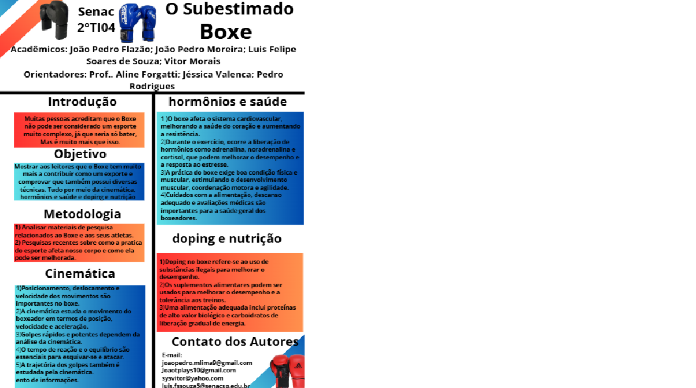

Esse trabalho, aplicado e avaliado pelos professores Jéssica Valença, de QuÁmica, e Pedro, de FÁsica, foi uma experiência marcante por seu formato inovador
A apresentação seguiu o modelo de banner, permitindo uma visualização dinâmica entre os grupos, o que tornou o aprendizado ainda mais interessante. Além disso, a atividade foi realizada em conjunto com a Turma 3 de T.I., aproveitando ao máximo as quatro aulas seguidas dedicadas à área de Ciências da Natureza. Essa integração não só ampliou nosso entendimento das matérias, como também incentivou a troca de conhecimentos entre as turmas.
Gostaria de destacar a professora Jéssica, alguém por quem tenho um carinho especial e que sempre será lembrada com muito afeto. Desde que ela deixou de dar aula para mim, sinto uma saudade enorme, pois sua dedicação e entusiasmo fizeram diferença na minha trajetória acadêmica.ğŸ˜
Segue uma imagem de referência:
